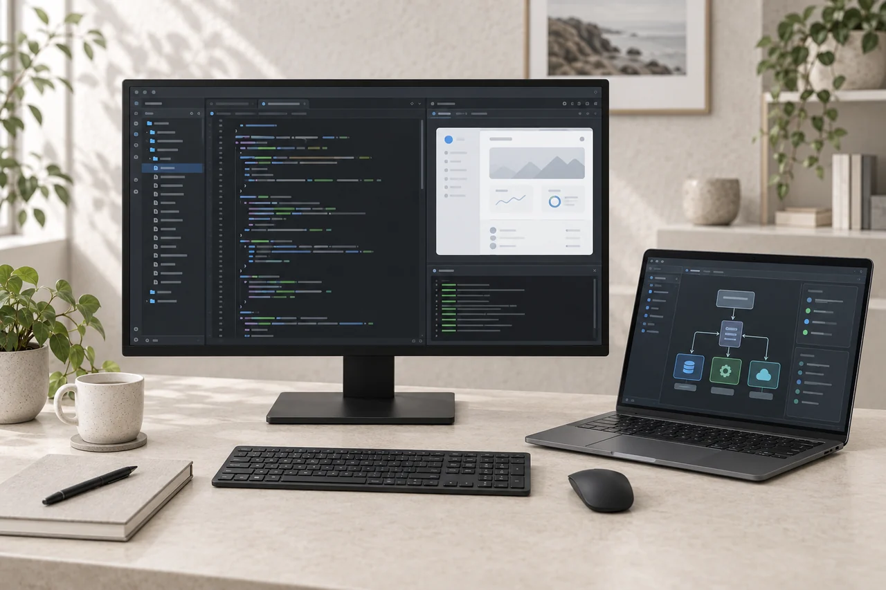

Open software contracting · Built around your business
Software built
around how
you actually
work.
Most businesses lose time to work that a computer should be doing — re-keying data, chasing information between systems, handling the same thing a hundred different ways. I build custom software that fits your process instead of forcing you to change it. You work with me directly, start to finish.

What I build
From one
automation to a
full system.
No fixed project size and no invented minimum price — some jobs are a single workflow, others are a system that runs the business.
AI workflow automation
Automate the repetitive, judgement-light work — triaging enquiries, classifying and routing, drafting responses, summarising documents — with a person kept in control of anything that matters.
Business process automation
Turn manual, multi-step tasks into a reliable, repeatable flow so the same result happens every time without someone remembering each step.
Internal & operational tools
The day-to-day software your team actually uses — dashboards, admin panels, and back-office tools shaped around your real workflow.
Database-backed systems
Structured systems for products, customers, stock, or records — built on solid databases so your information stays consistent and searchable.
Integrations & data processing
Connect the tools you already use, move data cleanly between them, and process large datasets that spreadsheets can no longer handle.
Desktop & web interfaces
Clean, fast interfaces for staff or customers — on the web, or as a desktop application where that fits the job better.
Advice & discovery
Not sure what you need yet? We start by mapping the actual problem — sometimes the answer is a small tool, sometimes an existing product, sometimes nothing at all.
Maintenance & ongoing support
Once it's live, I can keep it running — ongoing maintenance, hosting, team training, and support when you need it.
Booking & customer management
Online bookings, calendars, reminders, and customer records for appointment- and service-based businesses, built to fit your exact setup.
How I work
Understand first,
build second.
Small businesses and individuals both welcome. The approach is the same either way.
-
Start with the real problem
Before anything is quoted or built, we work out what's actually costing you time or money. Often the problem isn't the one you first describe — and naming it clearly is half the work.
-
Honest advice about custom vs off-the-shelf
Custom software isn't always the answer. If an existing product would do the job well and save you money, I'll tell you — I'd rather point you the right way than sell you something you don't need.
-
Built and delivered in stages
We agree a clear scope, then build in stages so you see progress early and each piece is useful on its own. Nothing large gets committed to sight-unseen.
-
Direct, no hand-offs
You deal with the person doing the work. No agency layers, no account managers relaying messages — just clear communication and a system that does what we agreed.
The toolkit
Strong where
it counts.
Python, databases, AI workflow integration and large-dataset work form the core — the parts that make business software reliable rather than just a demo. I also build Java and Electron interfaces where a desktop application is the better fit, and web-based interfaces where that suits.
Python & data
Databases
AI workflows
Web · Java · Electron
My own products
What I've
already built.
These started as solutions to real problems I encountered — now running live in Brisbane businesses. They show what a single-developer engagement can deliver.


Have a process
that should be
simpler?
Tell me what's slowing you down. I'll reply the same business day.